Overview
Welcome to the Powered by Tasty Bytes - Zero to Snowflake Quickstart focused on Transformation!
Within this Quickstart we will walk through a large set of Snowflake functionality covering key features like Zero Copy Cloning and Time-Travel to deliver on a Tasty Bytes business requirement.
Prerequisites
- Before beginning, please make sure you have completed the Introduction to Tasty Bytes Quickstart which provides a walkthrough on setting up a trial account and deploying the Tasty Bytes Foundation required to complete this Quickstart.
What You Will Learn
- How to Clone a Table
- How to Use Snowflake's Result Set Cache
- How to Add a Column to a Table
- How to Update Data in a Column
- How to Use Time-Travel
- How to Swap, Drop and Undrop a Table
What You Will Build
- An Understanding of Important Snowflake Transformation Functionality
- A Development Table Clone of a Production Table
- A New Column in a Table Complete with Calculated Food Truck Ages in Years
Overview
Within this Quickstart we will follow a Tasty Bytes themed story via a Snowsight SQL Worksheet with this page serving as a side by side guide complete with additional commentary, images and documentation links.
This section will walk you through logging into Snowflake, Creating a New Worksheet, Renaming the Worksheet, Copying SQL from GitHub, and Pasting the SQL we will be leveraging within this Quickstart.
Step 1 - Accessing Snowflake via URL
- Open a browser window and enter the URL of your Snowflake Account
Step 2 - Logging into Snowflake
- Log into your Snowflake account.
- 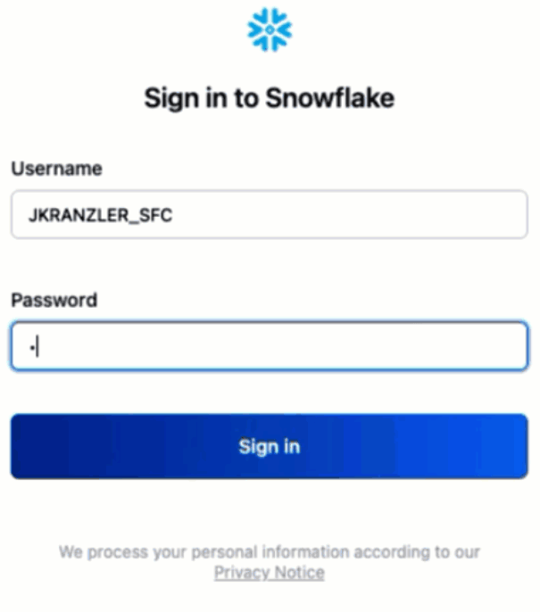
Step 3 - Navigating to Worksheets
- Click on the Worksheets Tab in the left-hand navigation bar.

Step 4 - Creating a Worksheet
- Within Worksheets, click the "+" button in the top-right corner of Snowsight and choose "SQL Worksheet"

Step 5 - Renaming a Worksheet
- Rename the Worksheet by clicking on the auto-generated Timestamp name and inputting "Tasty Bytes - Transformation"

Step 6 - Accessing Quickstart SQL in GitHub
- Click the button below which will direct you to our Tasty Bytes SQL file that is hosted on GitHub.
tb_zts_transformation
Step 7 - Copying Setup SQL from GitHub
- Within GitHub navigate to the right side and click "Copy raw contents". This will copy all of the required SQL into your clipboard.

Step 8 - Pasting Setup SQL from GitHub into your Snowflake Worksheet
- Path back to Snowsight and your newly created Worksheet and Paste (CMD + V for Mac or CTRL + V for Windows) what we just copied from GitHub.
Step 9 - Click Next –>
Overview
As part of Tasty Bytes truck fleet analysis, our developer has been tasked with adding a calculated Truck Age Column to our Truck table.
Being a great developer, we know we cannot develop against a Production table, so we first need to create a Development environment that mimics Production.
Step 1 - Create a Clone of Production
Thanks to Snowflake's unique architecture, we can instantly create a snapshot of our production raw_pos.truck using CLONE functionality and name it raw_pos.truck_dev.
Let's now run our next set our queries to set our tasty_dev role context and create the table clone noting here that we do not need to set Warehouse context since cloning does not require one.
USE ROLE tasty_dev;
CREATE OR REPLACE TABLE frostbyte_tasty_bytes.raw_pos.truck_dev
CLONE frostbyte_tasty_bytes.raw_pos.truck;
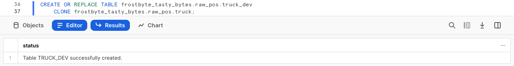
Step 2 - Click Next –>
Overview
With our Zero Copy Clone instantly available we can now begin to develop against it without any fear of impacting production. However, before we make any changes let's first run some simple queries against it and test out Snowflake's Result Set Cache.
Step 1 - Querying our Cloned Table
Now that we are going to query our Table, we will need to use our tasty_dev_wh Warehouse.
Let's kick off the next two queries with the second statement producing an result set consisting of our trucks, their years, make and models while making sure we ORDER BY our truck_id Column.
USE WAREHOUSE tasty_dev_wh;
SELECT
t.truck_id,
t.year,
t.make,
t.model
FROM frostbyte_tasty_bytes.raw_pos.truck_dev t
ORDER BY t.truck_id;
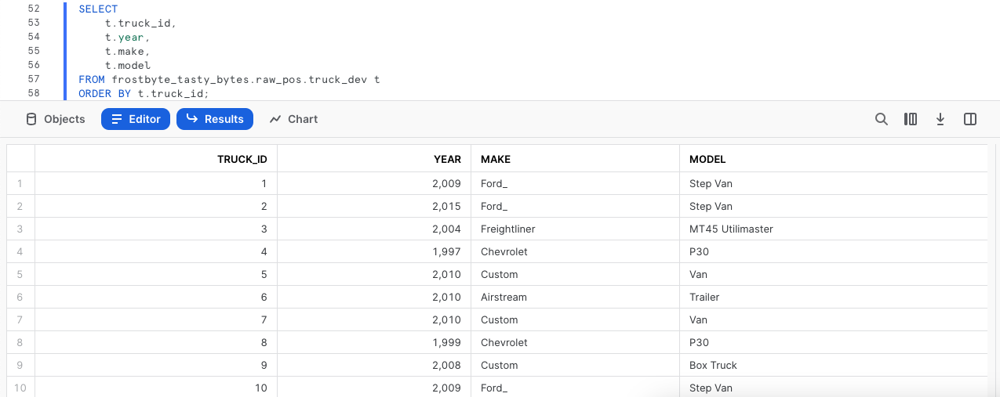
Step 2 - Re-Running our Query
To test Snowflake's Result Set Cache, the next query we run will be identical to what we just ran. However, we will now take things a step further and access the Query Profile showcasing this query returned results instantly as the the results came from our Result Set Cache.
After executing the below query, follow the steps in the screenshot to access the Query Profile. From the Query Profile we will see a single node noting QUERY RESULT REUSE.
SELECT
t.truck_id,
t.year,
t.make,
t.model
FROM frostbyte_tasty_bytes.raw_pos.truck_dev t
ORDER BY t.truck_id;
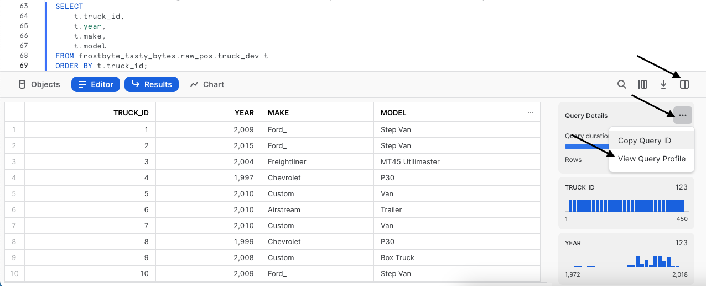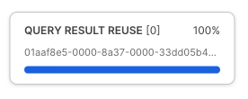
Step 3 - Click Next –>
Overview
Based on our output above we first need to address the typo in those Ford_ records we saw in our make Column. From there, we can begin to work on our calculation that will provide us with the age of each truck.
Step 1 - Updating Incorrect Values in a Column
To begin this section, let's make sure we correct the typo by executing our next query which leverages UPDATE to change rows in our truck_dev WHERE the make is equal to Ford_.
UPDATE frostbyte_tasty_bytes.raw_pos.truck_dev
SET make = 'Ford'
WHERE make = 'Ford_';
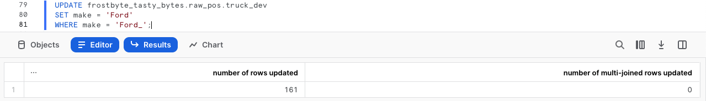
Step 2 - Building an Age Calculation
With the typo handled, we can now calculate the age in years of the trucks within our fleet. Please execute the next query where we will see YEAR and CURRENT_DATE leveraged to assist in this calculation.
SELECT
t.truck_id,
t.year,
t.make,
t.model,
(YEAR(CURRENT_DATE()) - t.year) AS truck_age_year
FROM frostbyte_tasty_bytes.raw_pos.truck_dev t;
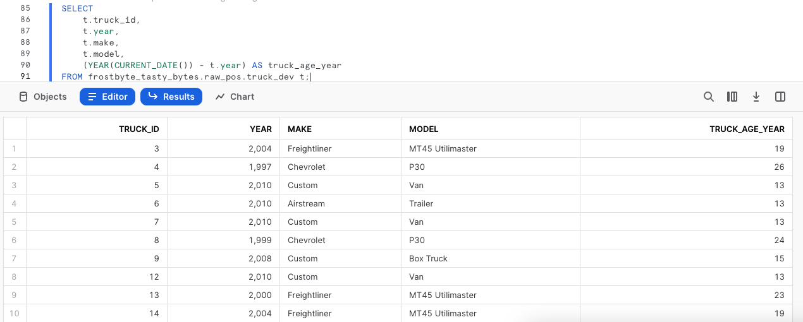
Step 3 - Click Next –>
Overview
With our Truck Age in Years calculation done and dusted, let's now add a new Column to our Cloned Table to support it and finish things off by updating the Column to reflect the calculated values.
Step 1 - Adding a Column to a Table
To start, please execute the next query which uses ALTER TABLE... ADD COLUMN to create an empty truck_age column of Data Type NUMBER to our truck_dev table.
This query will provide a Statement executed successfully result.
ALTER TABLE frostbyte_tasty_bytes.raw_pos.truck_dev
ADD COLUMN truck_age NUMBER(4);
Step 2 - Adding Calculated Values to our Column
With the column in place, we can kick off the next query which will UPDATE the new, empty truck_age column using the Truck Age calculation we built in the previous section.
UPDATE frostbyte_tasty_bytes.raw_pos.truck_dev t
SET truck_age = (YEAR(CURRENT_DATE()) / t.year);
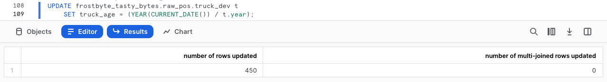
Step 3 - Querying our new Column
After successfully updating the data, let's now run a quick query against the table to see how things look in our truck_age column.
SELECT
t.truck_id,
t.year,
t.truck_age
FROM frostbyte_tasty_bytes.raw_pos.truck_dev t;
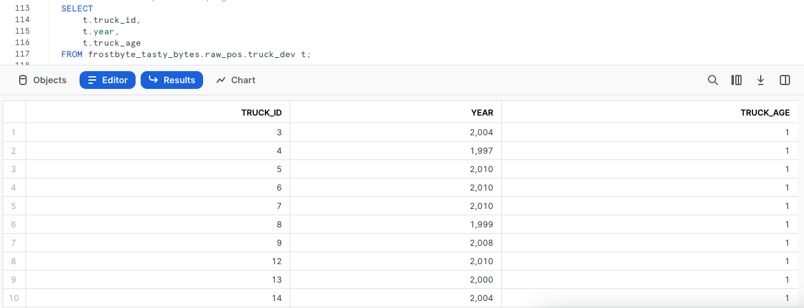
Uh oh! Thank goodness we were smart developers and didn't do this sort of thing blindly in production.
It looks like we messed up the truck_age calculation and had it doing division instead of subtraction. We will need to resolve this in our next section.
Step 4 - Click Next –>
Overview
Although we made an mistake, Snowflake has many features that can help get us out of trouble here. The process we will take will leverage Query History, SQL Variables and Time Travel to revert our truck_dev Table back to what it looked like prior to that incorrect pdate statement.
Step 1 - Leveraging Query History
To start our recovery process, kick off the next query which will use the Snowflake QUERY_HISTORY function to retrieve a list of all update statements we have made against our truck_dev Table.
SELECT
query_id,
query_text,
user_name,
query_type,
start_time
FROM TABLE(frostbyte_tasty_bytes.information_schema.query_history())
WHERE 1=1
AND query_type = 'UPDATE'
AND query_text LIKE '%frostbyte_tasty_bytes.raw_pos.truck_dev%'
ORDER BY start_time DESC;
Step 2 - Setting a SQL Variable
As expected, we see our typo correction as well as our bad calculation update and their associated unique query_id's. Please run the next query which creates a query_id SQL Variable that we will use to revert our changes via Time-Travel in the next step.
After execution you will recieve a Statement executed successfully result.
SET query_id =
(
SELECT TOP 1 query_id
FROM TABLE(frostbyte_tasty_bytes.information_schema.query_history())
WHERE 1=1
AND query_type = 'UPDATE'
AND query_text LIKE '%SET truck_age = (YEAR(CURRENT_DATE()) / t.year);'
ORDER BY start_time DESC
);
Step 3 - Leveraging Time-Travel to Revert our Table
With our bad query_id stored as a Variable, we can execute the next query which will replace our truck_dev Table with what it looked like BEFORE the incorrect query_id statement using Time-Travel.
CREATE OR REPLACE TABLE frostbyte_tasty_bytes.raw_pos.truck_dev
AS
SELECT * FROM frostbyte_tasty_bytes.raw_pos.truck_dev
BEFORE(STATEMENT => $query_id);
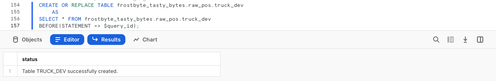
Please refer to the list below for the other Time-Travel Statement options available.
Step 4 - Click Next –>
Overview
With our truck_dev Table back to the state it was before our incorrect update statement, we can now make sure the column is correctly updated. From there we will promote our Table with the correct calculation to Production to complete our assigned task.
Step 1 - Adding Correctly Calculated Values to our Column
Using the same process as before, please run the next query making sure we now double check we are using subtraction instead of division.
UPDATE frostbyte_tasty_bytes.raw_pos.truck_dev t
SET truck_age = (YEAR(CURRENT_DATE()) - t.year);
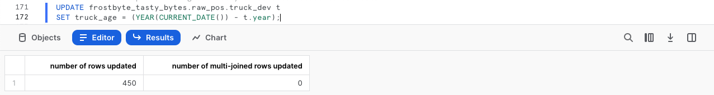
Step 2 - Swapping our Development Table with Production
With everything complete in truck_dev please kick off the next two queries where we first assume the more privileged sysadmin role. As a sysadmin the second query utilizes ALTER TABLE... SWAP WITH to promote our truck_dev table to truck and vice versa.
Once complete you will recieve a Statement executed successfully. result.
USE ROLE sysadmin;
ALTER TABLE frostbyte_tasty_bytes.raw_pos.truck_dev
SWAP WITH frostbyte_tasty_bytes.raw_pos.truck;
Step 3 - Validate Production
To confirm our process was successful, let's now take a look at the Production truck table so we can validate the swap was successful and the truck_age results are valid.
SELECT
t.truck_id,
t.year,
t.truck_age
FROM frostbyte_tasty_bytes.raw_pos.truck t
WHERE t.make = 'Ford';
Step 4 - Click Next –>
Overview
We can officially say our developer has completed their assigned task. With the truck_age column in place and correctly calulated, our sysadmin can clean up the left over Table and sign off for the day.
Step 1 - Dropping a Table
To remove the Table from our Database, please execute the next query which leverages DROP TABLE.
DROP TABLE frostbyte_tasty_bytes.raw_pos.truck;

Uh oh!! That result set shows that even our sysadmin can make mistakes. We incorrectly dropped production truck and not development truck_dev! Thankfully, Snowflake's Time-Travel can come to the rescue again.
Step 2 - Undropping a Table
Hurry up and run the next query before any systems are impacted which will UNDROP the truck table.
UNDROP TABLE frostbyte_tasty_bytes.raw_pos.truck;
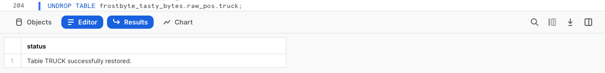
Step 3 - Dropping the Correct Table
Alright, now let's officially close things out by running the final query to correctly drop truck_dev.
DROP TABLE frostbyte_tasty_bytes.raw_pos.truck_dev;
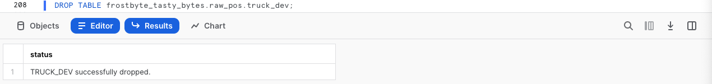
Step 4 - Click Next –>
Conclusion
Fantastic work! You have successfully completed the Tasty Bytes - Zero to Snowflake - Transformation Quickstart.
By doing so you have now:
- Cloned a Table
- Used Snowflake's Result Set Cache
- Added a Column to a Table
- Updated Data in a Column
- Leveraged Time-Travel for Data Disaster Recovery
- Swaped, Dropped and Undropped a Table
If you would like to re-run this Quickstart please leverage the Reset scripts in the bottom of your associated Worksheet.
Next Steps
To continue your journey in the Snowflake Data Cloud, please now visit the link below to see all other Powered by Taste Bytes - Quickstarts available to you.